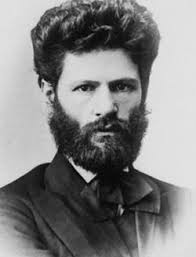
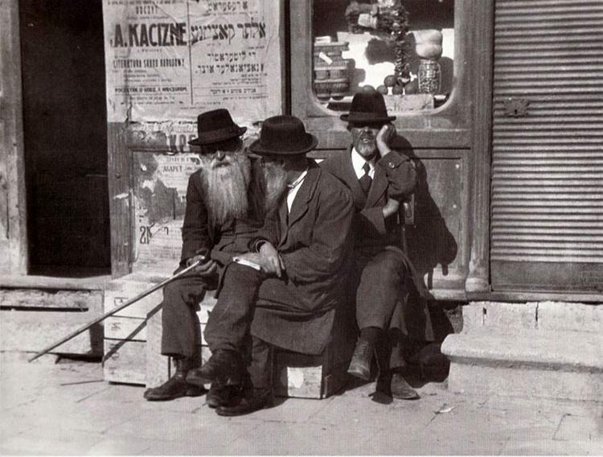
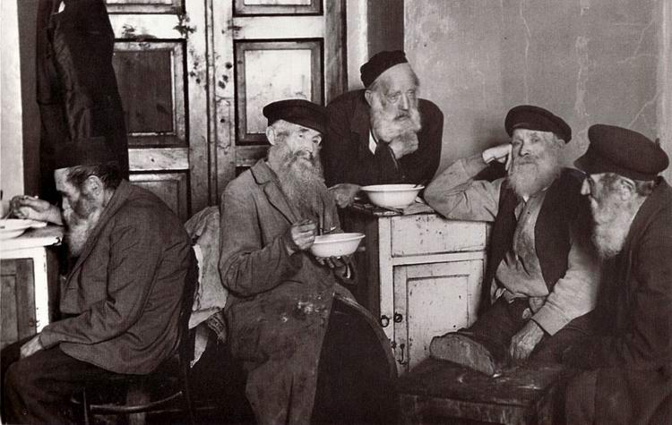
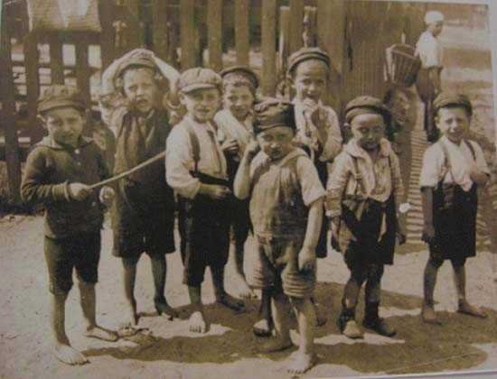
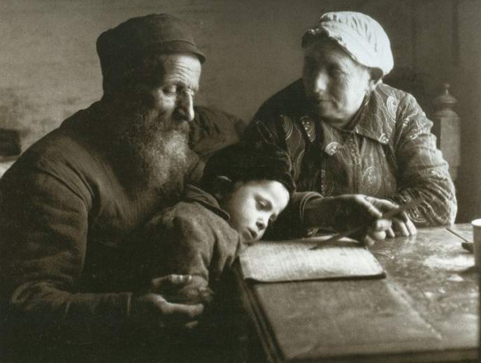
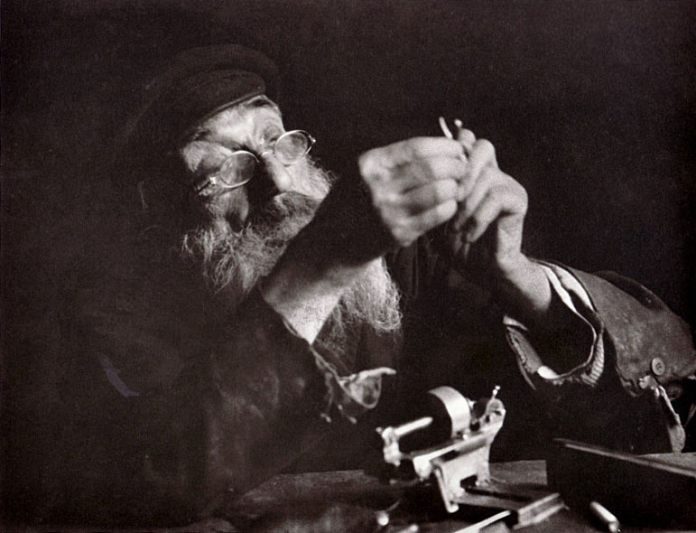
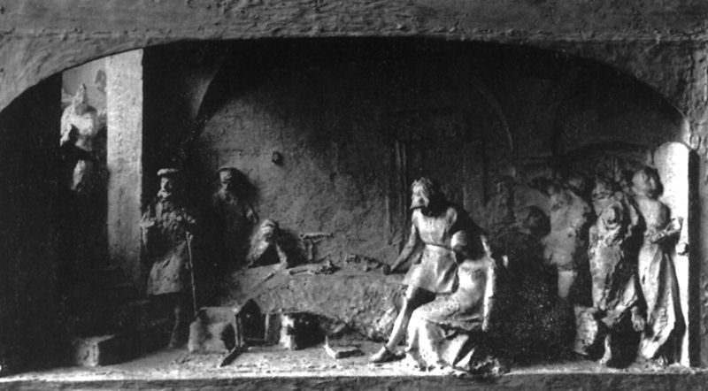
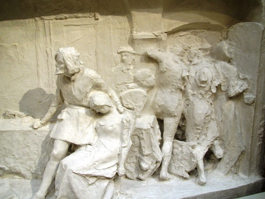
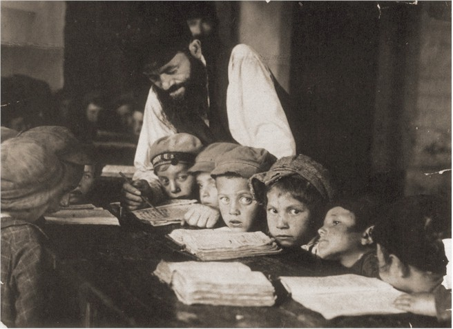

Mark Antokolsky. Christ Before the People. Part I
"I am a Jew and I shall remain one for ever."
"How so? Does that fit with being a Jew?"
"Like all Christians, you forget the origin of your Christ: after all, He was a Jew. And can there be anything higher than His love for mankind?"
Author: Dmitry Mendeleev. Translated from Russian.

In brief: Mark Matveyevich Antokolsky (Mordukh Matysovich Antokolsky; 21 October 1843, Vilna, Russian Empire – 26 June 1902, Frankfurt am Main, German Empire) was a celebrated realist sculptor, an academician from 1871 and a professor of sculpture from 1880.
MARK ANTOKOLSKY. CHRIST BEFORE THE PEOPLE
"Pilate saith unto them, What shall I do then with Jesus which is called Christ? They all say unto him, Let him be crucified. And the governor said, Why, what evil hath he done? But they cried out the more, saying, Let him be crucified. When Pilate saw that he could prevail nothing, but that rather a tumult was made, he took water, and washed his hands before the multitude, saying, I am innocent of the blood of this just person: see ye to it. Then answered all the people, and said, His blood be on us, and on our children" (Matt. 27:22–25).

Rome, spring 1873. Mark Antokolsky to Stasov: "I have made a sketch: Christ before the people. Are you surprised? I can imagine how Christians and Jews will rise up against me. The Jews will probably say: 'How could he make a Christ?' And the Christians will say: 'What sort of Christ has he made?' But none of that concerns me. Please, not a word about all this to anyone, except Repin." (Editor's note: Antokolsky's Christ was portrayed in the guise of a religious Jew.)
"I could hardly understand his broken language," writes Ilya Yefimovich Repin, "and could hardly hold back a smile at his mangled words. I asked my companions about him: who is this foreigner? They exchanged glances: a foreigner? Yes, he is a Jew from Vilna. And can he really be unbaptised? I wondered. He'll be baptised, of course. After all, their faith does not even allow them to practise sculpture; surely he won't give up art. 'And how do you regard the religious attitude of the Jews to the plastic arts?' I once asked him. 'I hope it will not hinder me in the least in practising my art, and I may even serve the good of my people by it.' He took on a proud bearing and went on with great determination in his look: 'I am a Jew and I shall remain one for ever.' 'How so? You were just telling me how you worked on the Crucifixion of Christ. Does that fit with being a Jew?' 'Like all Christians, you forget the origin of your Christ: after all, He was a Jew. And can there be anything higher than His love for mankind?' Mark's energetic eyes glistened with tears, and he said somewhat mysteriously: 'I have a whole series of subjects from His life in mind.'"
Mark Antokolsky to Stasov: "It seems to me that until now no one has treated Him as I picture Him. After all, until now Christianity has gone in the name of Christ against Christ; until now He has been in the hands of exploiters, and now all who deny Christianity are coming closer to Him. The thing is also that a respectable man from Moscow has commissioned a work from me on a subject of my choice, and he wants to devote a room in his house to it, for a special impression and complete lighting. So I am counting here on a whole setting at life size. But I have not yet thought enough about all this."
The respectable man was Savva Mamontov. A year earlier he had come to Italy with his wife for treatment, and they became such friends with the young sculptor that Savva Ivanovich began to model himself, and not badly, while Mark Matveyevich, his teacher, became the organiser of the famous Mamontov circle, the future Abramtsevo company.
"In mind he was a thinker," recalled Elizaveta Mamontova, "and in all his conversations there were always many original thoughts that raised ever new questions. In these talks, in the correspondence, the subject was born that had been generously left to Antokolsky's choice."
First, he himself was impatient to understand how religion had crucified Christ. How could it happen that an official spiritual organisation destroyed the purpose of its own existence, killed God? And second, like all his friends, he wanted to enlighten the people. "You know," he told Stasov, "I think exclusively about the Russians, and also about the Russian Jews, because no one needs education in general so much as the Russian Jew."


Mark Antokolsky to Stasov: "Whoever has not seen and does not know those masses of poor, ragged and hungry Jews who spend day and night in the synagogue, where they sleep on bare boards in a most infectious atmosphere, 40 and 50 to a room, whoever has not seen those exalted or eccentric faces when they are occupied with their dark, tangled but beloved Talmud, cannot imagine the milieu from which the statue of Jesus came."

"My childhood," writes Antokolsky, "was too gloomy, so gloomy that I remember it with a shudder. I was an unloved child, and I got it from everyone. Whoever wanted to beat me did, even the servants; but no one caressed me. I wore out old clothes; they called me 'blockhead' and 'tin hands'. In the family I did the job of a workhorse. Only my mother did not humiliate me."

Mark was the sixth child of a poor innkeeper. Once he drew a water-carrier with a horse on the stove; on seeing them his father stamped his feet and shouted for a long time, and then beat the young author. From then on Mark Matveyevich created only at night, in secret, and paid for paper and pencil with his breakfast and dinner.
Once he carved in wood a reproduction of Van Dyck's painting "Christ and the Mother of God". People began to talk about him; it reached the governor, and the governor's wife, a kind woman, using her St Petersburg connections, managed to send him to study at the Academy of Arts, where he ended up in one room with Repin; poor, but happy. "I had been going to take my clay little Jews to the photographer," he told his friend, "but decided it would be better first to take my pockets to the tailor. Since I had just got a little money, I wanted to mend my pockets, so as to have somewhere to keep it. But the tailor took my money for mending the pockets, and the photographer would not accept pockets instead of money."
Ilya Repin wrote of him: "His soul was sincere and spontaneous. Stasov alone supported Antokolsky in his reviled, humiliated and insulted world of Jewry. He understood Stasov and revered him as a spiritual father. Stasov's bold flight of noble altruism and his adoration of a real national art gave Antokolsky wings and inspired him. Living life, and especially the close history of his tragic people, the joyless fate of his native tribe, filled his soul with a lofty drama. His ideas in art were his heart, his blood."

Stasov: "I hope you have all seen and know well his wooden statuette of a Jew threading a needle? What a little thing! Small in size, but large enough to lead all the new sculpture onto the true road."
Most of all Vladimir Vasilyevich came to love Antokolsky for the high relief "The Inquisition's Attack on Jews in Spain during Their Secret Celebration of Passover".
(On the Inquisition's treatment of the Jews see the Jewish Encyclopedia, in Russian.)


"I was struck," writes Repin of his first impression of "The Attack of the Inquisition". "I began to make out figures full of drama and mystery. I began to feel uneasy. I stood for a long time as if turned to stone, in silence. We all wondered what to do next, how to preserve this unprecedented experiment in sculpture. What to do with the wet clay, which had begun to dry from the movement of the air and to fall apart. It was modelled even without an armature." It was decided to photograph the composition. But the fifty roubles of prize money received for it had gone precisely on mending pockets. Probably Stasov helped later. To him alone, already working on the statue of Christ, did Antokolsky tell of the events that moved him to create the Inquisition.
Antokolsky to Stasov: "I think it was in the year fifty-one: the Jews suddenly received a most gracious decree to provide recruits. One had to catch a person who had no passport. It is hard to convey to you the despair, the cries and moans that broke from the lips of the poor, defenceless mothers whose children were being taken from them, and sometimes children not yet seven years old. There was our neighbour, a widowed seamstress, who out of her whole family had saved only one son, a thin, weak boy with big eyes. How she guarded him, how she trembled over him. But they tore him from her alive. And afterwards she just lay and wept: now she imagined him standing guard in a field in a night blizzard, now she imagined him being beaten. 'Oh my little bird, my darling, they're flogging him, the blood is flowing, oh, what for...' But she did not pine for long. She died before her time, alone, without comfort, without hope, but with faith, with love."

Mark was hidden by a Christian. Coming out of hiding when the levy was over, he still found the scene of the send-off. Amid the general bustle the officer gave the command: "March!" The carts moved off, and the wails mixed with kisses grew louder still, but suddenly someone shouted: "The rabbi has come!" It was as if an electric current ran through everyone, and one and the same cry broke from every breast: "Ask our forefathers why we suffer so." And nothing could hold back these desperate, wild cries, as if the pressure had burst a valve somewhere. Everyone wept. The rabbi wept. And I wept.
The most terrible, the most shocking things, if they happen before us every day, we get used to and become indifferent. Indeed, make a comparison: take the fact of the slaughter of the infants and the fact I have just told. One asks: which is better for a poor, believing mother, that her child is now in heaven, turned into an angel? Or to feel constantly that it is being tormented, that it calls her as she calls it, but between them is an abyss...
Continued here.
See also the article "The Thorns and Stars of MARK ANTOKOLSKY".
 Did the Jews Take Egypt with Them in the Exodus?
Did the Jews Take Egypt with Them in the Exodus? The Beginnings of Zionist Art. Part II
The Beginnings of Zionist Art. Part II The Passover Haggadah. A Historical Note
The Passover Haggadah. A Historical Note